longbox is a desktop vault for manga, manhwa, manhua, comics, image sets and episodes — with a real browser built in. You read the sites you already read; longbox learns what a title's page looks like once, and files everything into folders you can open with anything.
Install and open — nothing else to set up. No account, no cloud, no telemetry. All releases
Grid, dense list and expanded views. Linked faceted filters — type, status, genres, tags, language, authors, artists, characters, studio, content flags — with include and exclude, so counts always reflect what is actually left. Shelves narrow by type; Browse by regroups the whole library along any list field, and each shelf keeps its own list of those. Favourites, ratings and reading progress are a separate layer: editing a title's metadata can never roll them back.
The fields themselves are yours: add your own to the registry — text, list, number, date or flag — group them, and decide which appear on title pages, in the filters, and in the capture dock of each source.
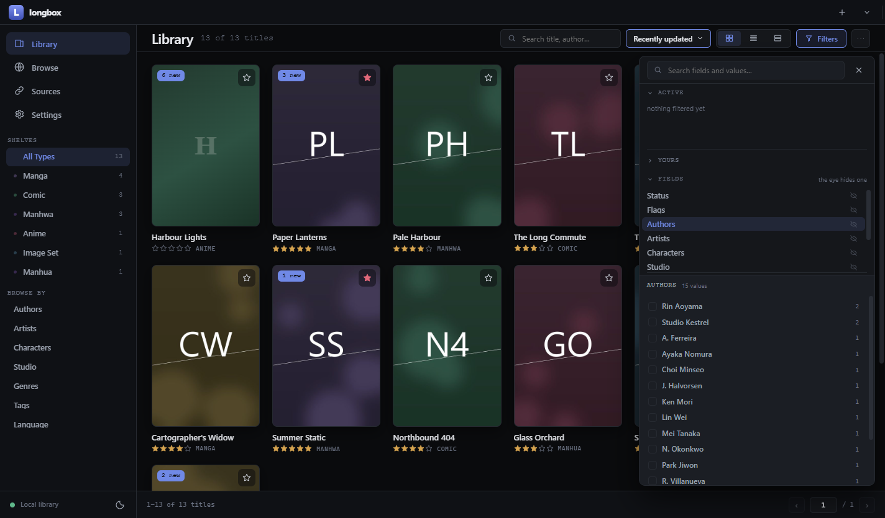
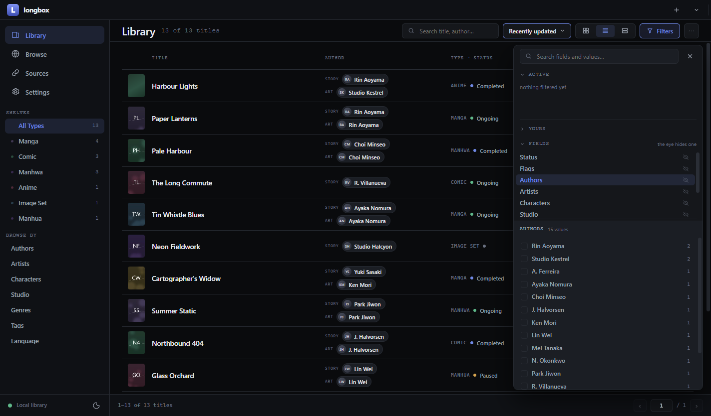
One row per translation, grouped under a shared label, with language and group chips. Edit mode adds entries by hand, attaches or replaces archives, imports loose images or a whole folder, moves pages between entries, and reorders pages by dragging. Every metadata field remembers whether it was captured automatically or typed by you — automatic capture can never overwrite your edit.
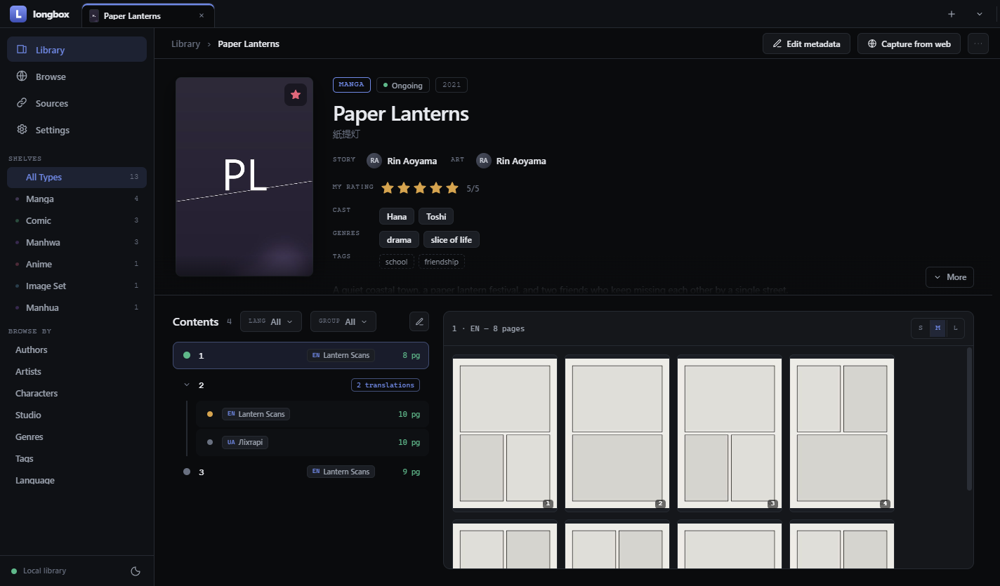
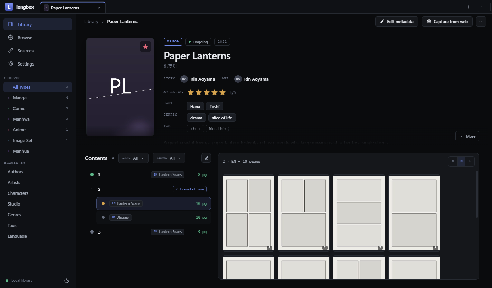
Page mode and continuous strip, fit-to-height / width / custom, adjustable margins, and a hideable rail of page thumbnails. Chapter navigation moves between labels and keeps the translation you were reading. Progress is written through instantly. Every shortcut is rebindable, bound to the physical key so it survives a keyboard-layout switch.
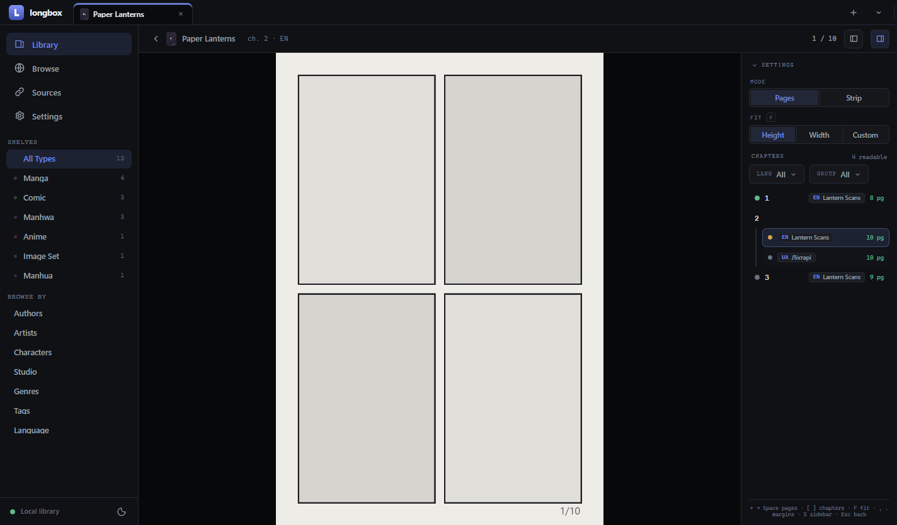
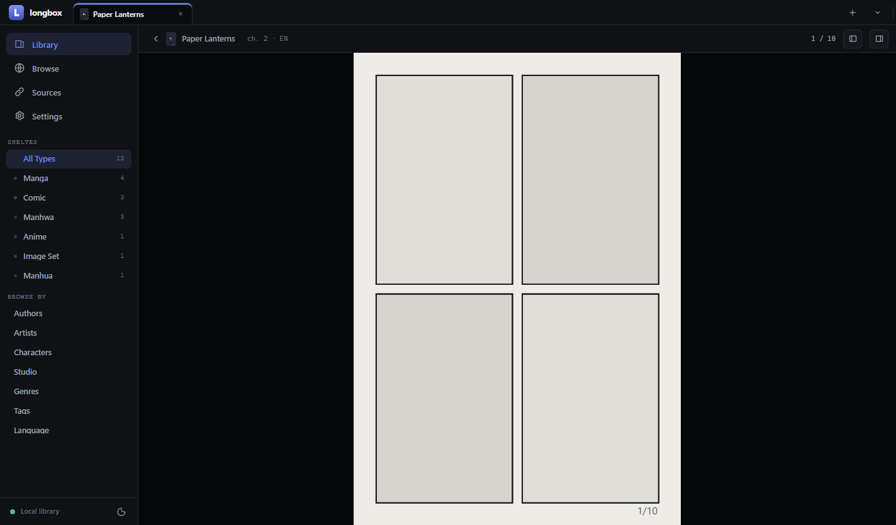
An episode is a chapter like any other — it carries its language, group, source and reading state — but it is stored as the file it arrived as, streamed rather than copied, and it remembers where you stopped. Leaving the page and coming back offers to resume, and so does opening it in the full-window player.
Its preview is cut from the file itself: nine frames laid out as a contact sheet, each tile a link to the second it came from, so you can see what an episode is before playing it and start where you meant to. That happens once — the frames are stored beside the media in your vault, and nothing re-reads the video to draw a thumbnail again. There is no decoder in the app: the window that plays the file is what draws the frames.
Playback is in place, on the title page, with arrow-key scrubbing and the player's own controls; the same surface fills the window when you want it to. Files a browser cannot open (mkv, avi) are still catalogued and offered to your system player rather than hidden.
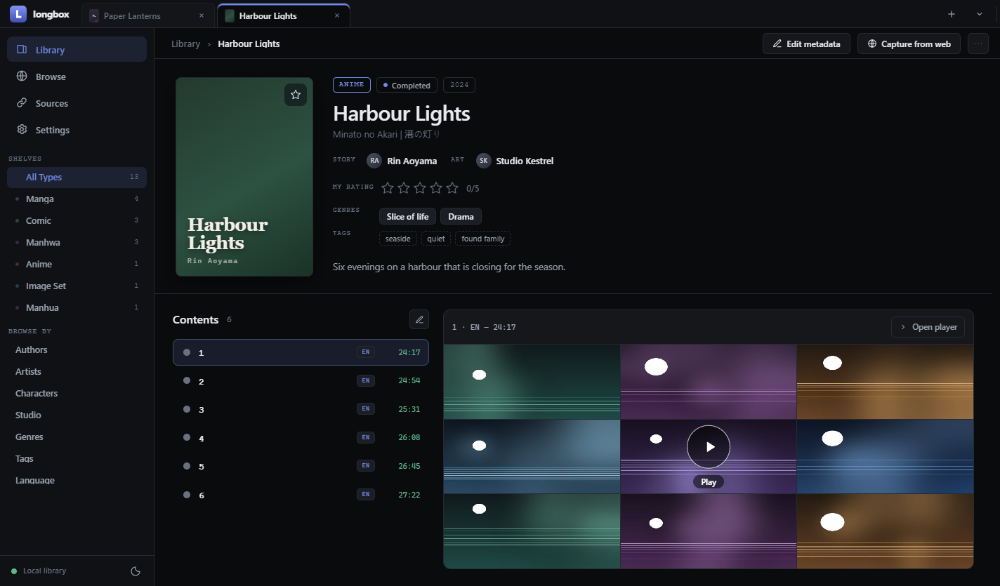
longbox embeds a real browser and lets it behave like one: tabs you can pin, reorder, mute and open in the background, a floating find bar, a page context menu, and the shortcuts your hands already know — F5, Ctrl+F, Ctrl+L, Ctrl+T, Alt+←, Ctrl+1…9 — working over the page itself, not only over the app's chrome. You sign in on the site; the app never sees your password and never fetches anything you did not open. What it does see, it can capture: click an element and refine the selector in the inspector, with a live preview of the exact value that would be stored — including how several matches are joined when the field holds one.
A work whose tags are spread over several pages can have them merged instead of replaced. And when you auto-fill a new draft over a page your library may already hold, longbox says so first — with what each candidate record is, its type and where it came from — rather than quietly creating a second copy of the same work.
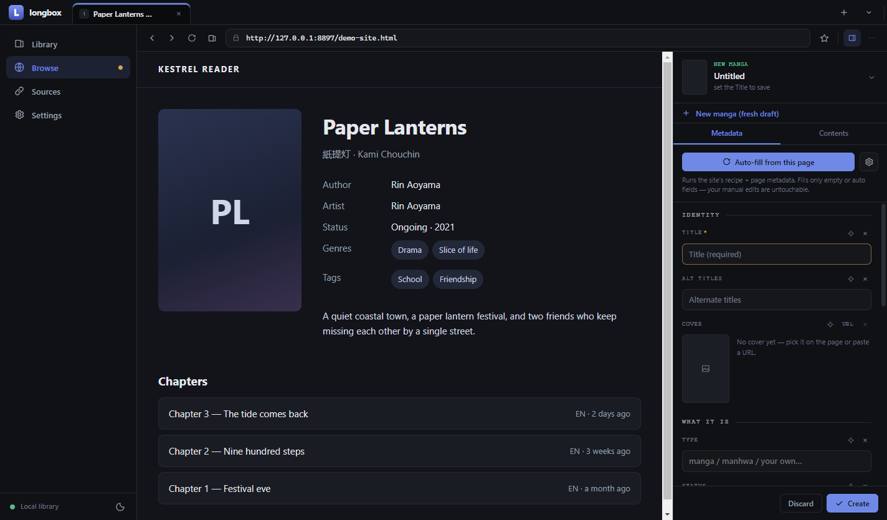
In longbox's own Browse tab, on whatever site you use. Sign in there if the site needs it — the app only ever sees the session, never your password.
On a site longbox already knows, the title, alt title, authors, tags, description and cover fill in at once. On a new site nothing is invented: only the page's own metadata is used until you teach the rest.
Click pick next to a field and then the element on the page. The inspector shows what would be stored, right now, for every match. What you teach is remembered for that domain, so the next title from the same site fills itself in.
The title becomes a folder on disk. Fields you typed are marked as yours and no later capture can overwrite them.
Three ways, because sites differ. All three end with the same thing on disk: one plain zip per chapter, with a note recording where it came from.
Name the chapter in the dock and press Add + arm download. Then click the site's own download button. longbox catches that download, files it into exactly that chapter and records the source. One arm, one download.
zip, cbz, rar and 7z all work — anything not already a zip is converted on the way in.
Switch the dock to Pages, click one page image so longbox learns which images are pages, name the chapter and press Start page capture. Then just read it. Every page you open is fetched and appended, in order.
Pages you already have are never fetched again, so going back a page costs nothing. Finish chapter closes it and offers the next number.
On the title page, open the contents editor and drop in an archive, a set of images, or a whole folder. Pages can be reordered by dragging, moved between chapters, or deleted.
Useful for scans you made yourself, or a backup from another app.
A panel over the app lists every transfer by title and chapter with its progress, and any of them can be stopped. Closing the window while something is still coming down warns first: each transfer keeps its place — the part already fetched, the entry it was claiming — so the next launch can pick it up where it stopped, or start it over when the source will not honour that.
Page images are fetched with the embedded browser's own cookies and the reader page as referer — the very same request the page makes for itself. That is why gated chapters and hotlink-protected CDNs work at all, and why nothing works that you could not open yourself.
A chapter is a label plus a language and a group, so two translations of chapter 12 are two rows under one label — each with its own file, its own pages and its own read state.
Authors and artists are aggregated from what you captured, with their role, their works and their most common tags — click any name anywhere in the app to filter the library by it.
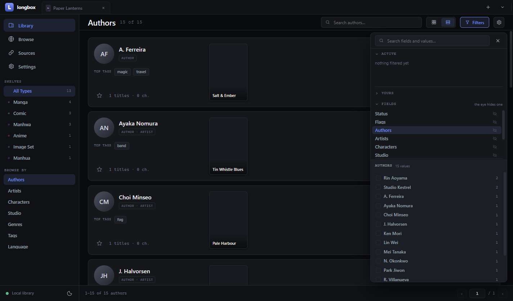
Download, install, open. Everything below happens inside the app — there is nothing to configure on disk and no command line involved.
Settings → Storage. Any folder works; longbox indexes whatever is already there and never moves files you did not ask it to.
Browse → open the title's page on the site → New title in the capture dock → Auto-fill, or pick fields one by one. Save.
Either arm a download and click the site's download button, or switch the dock to Pages, teach which images are the pages, and read the chapter through.
Everything after this point is offline. The reader only ever opens your own files.
The folder on disk is the truth; the search index is a cache that can be deleted and rebuilt at any time. Every chapter is a plain zip — CBZ is the same container — so any comic reader opens them. Archives that arrive as rar or 7z are converted on the way in.
library/ index.db rebuildable cache — safe to delete manga/ paper-lanterns/ title.json metadata · provenance · chapters · your layer cover.jpg chapters/ ch-1-en.zip the pages ch-1-en.json where the file came from image-set/ neon-fieldwork/…
| Guarantee | What it means in practice |
|---|---|
| Atomic writes | A write either lands whole or not at all; a crash mid-save cannot leave a half-written title. |
| Your layer is separate | Favourites, ratings and read progress live apart from metadata — a re-capture never touches them. |
| Nothing is orphaned | Re-capturing a chapter list keeps downloaded files bound to their rows; media is removed only when you say so. |
| Provenance | Each field records whether it came from a site or from you; each downloaded file records its source. |
.rar needs an unrar (or bsdtar) binary on
your PATH. Without one, longbox leaves the file untouched and tells you — it never rewrites an
archive it cannot read.
Multiple library folders with instant switching, your own metadata fields, the browser's homepage and one-click cookie or cache clearing, rebindable keys, theme, and the two maintenance actions: rebuild the search index, or re-run the archive conversion sweep.
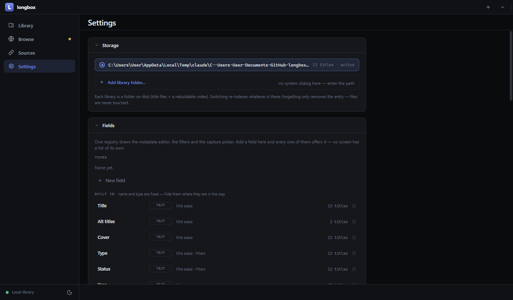
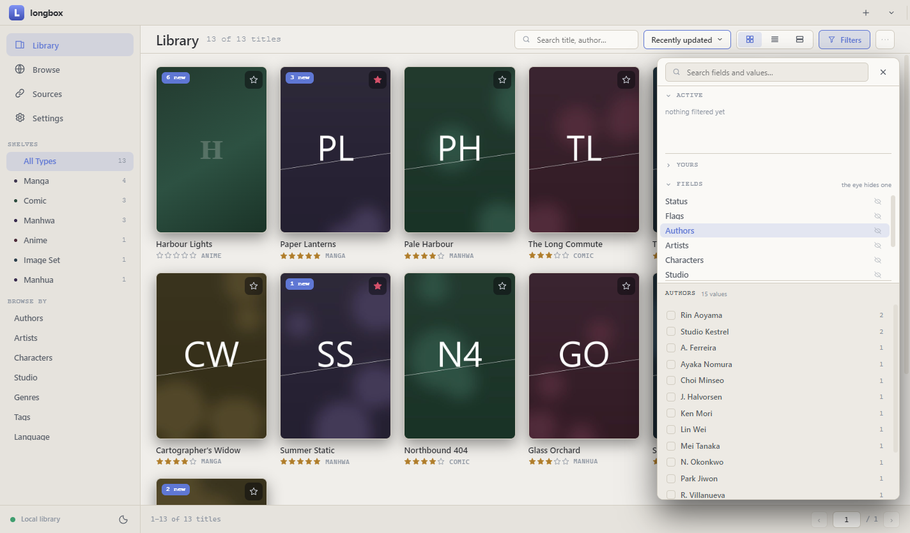